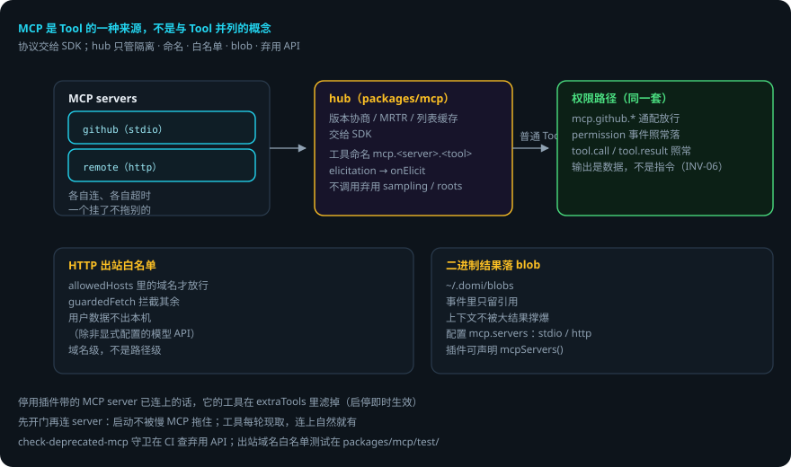

DOMI · DOCS
MCP 接入
本页回答四个问题：MCP 怎么接入？工具怎么变成普通 Tool？安全边界在哪？出错了会怎样？
packages/mcp—— MCP hub。 贯穿例子：给登录接口加限流——domi 可以连一个 github MCP，把限流改动提成 issue。
先说结论
- MCP 是 Tool 的一种来源，不是与 Tool 并列的概念。
- 协议本身交给
@modelcontextprotocol/client（版本协商、MRTR、列表缓存都在 SDK 里）。hub 只做 SDK 不管的事。 - 工具以
mcp.<server>.<tool>变成普通 Tool，走 domi 的权限路径——可以用mcp.github.*通配规则放行。 - HTTP 出站过白名单：用户数据不出本机，除非显式配置的模型 API。
- 二进制结果落 blob（
~/.domi/blobs），事件里只留引用。 - 不调用已弃用的 sampling / roots / logging（
check-deprecated-mcp守卫守）。
用到的词
| 词 | 意思 |
|---|---|
| MCP server | 提供工具的远端进程（stdio / http）。 |
| hub | domi 的 MCP 连接管理器。 |
| blob | 二进制结果的落盘目录（~/.domi/blobs）。 |
| 白名单 | HTTP 出站域名列表（allowedHosts）。 |
| elicitation | MCP server 向用户要输入。 |
1. 总体流程

2. 定位：hub 只做 SDK 不管的事
协议本身（版本协商、MRTR、列表缓存）在 SDK 里。hub.ts 只管五件事：
- 每个 server 各自连、各自超时，一个挂了不拖别的。
- 工具以
mcp.<server>.<tool>变成普通 Tool，走 domi 的权限路径（INV-03）——用户可以用mcp.github.*通配规则放行。 - HTTP 出站过白名单（用户数据不出本机，除非显式配置的模型 API；出站域名白名单测试）。
- 二进制结果落 blob（
~/.domi/blobs），事件里只留引用。 - 不调用已弃用的 sampling / roots / logging（
scripts/check-deprecated-mcp.ts守）。
3. 连接与生命周期
- server 配置（stdio / http 两种传输）在
config.yaml的mcp.servers，加上插件声明的 server（plugins?.mcpServers()）。 - 先开门再连 server：daemon 启动时连接可能要好几秒（每个 server 各自超时），不能让拉起 domid 的客户端一直等；会话每轮现取工具，连上之后自然就有了。
- 停用插件带的 MCP server 已经连上了的话，它的工具在
extraTools里滤掉（启停即时生效）。 - server 向用户要输入（MCP elicitation）→
onElicit（daemon 里接ctx.elicit，认识的端画表单；不给就一律 decline）。
4. 工具 → 权限 → 事件
MCP 工具不特殊：hub.tools() 返回普通 Tool 数组，与内置工具、插件工具一起进 ToolRunner。权限规则按能力名匹配（mcp.<server>.<tool> 是 CapabilityId）；每次调用照常产生 permission 事件与 tool.call / tool.result 事件。MCP 的输出是数据，不是指令（INV-06）。
5. 配置参考
mcp:
servers:
- name: github
command: npx # stdio 传输
args: ["-y", "@modelcontextprotocol/server-github"]
env: { GITHUB_PERSONAL_ACCESS_TOKEN: "..." } # 或从 secrets 引用
- name: remote
url: https://mcp.example.com/mcp # http 传输
allowedHosts: [api.example.com] # 出站白名单
timeoutMs: 30000
6. 出错了怎么办：github MCP 连不上
- server 连不上 / 超时。hub 各自连、各自超时——github 挂了不拖别的 server。工具没连上时，
extraTools里就少这批工具，模型下一轮拿不到，走别的路径。 - HTTP 出站被拦。域名不在
allowedHosts→guardedFetch拒绝。在配置里加域名。 - 二进制结果太大。落 blob（
~/.domi/blobs），事件里只留引用——上下文不被撑爆。 - server 要输入。elicitation →
onElicit→ 端上画表单。没有端接 → 一律 decline。 - 调用被权限拒。
mcp.github.create_issue无规则 → 默认拒绝（走权限引擎）。加规则或通配放行。
一张表看全部情况
| 情况 | domi 做什么 | 你要做什么 |
|---|---|---|
| server 连不上 | 各自超时，不拖别的；工具暂缺 | 查 server 配置 / 网络 |
| 出站被拦 | guardedFetch 拒绝 | 在 allowedHosts 加域名 |
| 二进制结果大 | 落 blob，事件留引用 | 不用管 |
| server 要输入 | onElicit 画表单；没端接则 decline | 在端上填表单 |
| 权限拒绝 | 默认拒绝，落 permission 事件 | 加规则（如 mcp.github.*） |
7. 可靠性靠什么
- 隔离：每个 server 各自连、各自超时，单点故障不扩散。
- 统一权限：MCP 工具走同一套权限引擎，没有后门。
- 出站白名单：数据不出本机，除非显式配置。
- blob 落盘：大结果不进事件流，上下文与库不膨胀。
- 弃用 API 守卫：sampling / roots / logging 在 CI 里被查，不会悄悄引入。
已知限制
- 连接的 server 数量与启动延迟线性相关（虽有「先开门再连」缓解）。
- elicitation 依赖端上实现；没有端接时一律 decline。
- 出站白名单是域名级，不是路径级。
- 协议版本协商等交给 SDK——SDK 升级可能改变行为。
代码在哪里
| 主题 | 位置 |
|---|---|
| hub（连接 / 隔离 / 工具） | packages/mcp/src/hub.ts |
| 出站白名单 fetch | packages/mcp/src/*（guardedFetch） |
| blob 落盘 | packages/mcp/src/blobs.ts |
| 弃用 API 守卫 | scripts/check-deprecated-mcp.ts |
| MCP 配置 schema | packages/config/src/schema.ts（mcp.*） |
测试：packages/mcp/test/（多 server 隔离、白名单、blob 落盘、elicitation）。